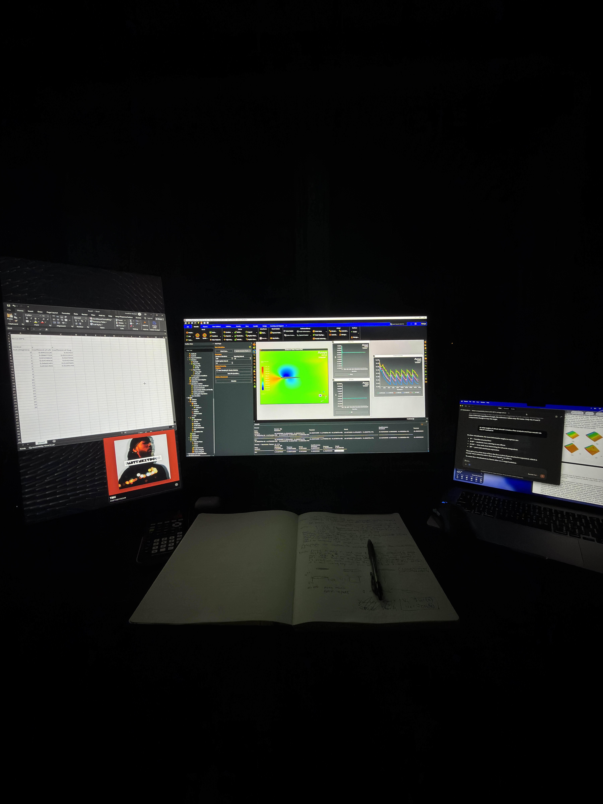

3/9/2026; 11:29 PM
I'm currently working on a CFD simulation of a tubercle airfoil; let's just say it's been a real challenge to learn the software and get results. Iterations are part of the engineering process--or so I think--and at the moment, it seems that iterations are the only thing I'm getting. This is supposed to be an AP Research Paper; most kids are doing surveys about political affiliation or language spoken at home. I'm not sure if I'm doing too much, they're doing too little, or if I'm just a little crazy. I'd like to think it's the second, but it's more likely the latter.
On the topic of the project itself, I literally just made a huge methodology shift and am now redesigning the whole mesh (no joke I got bored of working on the flow boundaries and came to write this). After dealing with some solver issues, more specifically, getting lift curves that weren't lift curves at all, I figured the best course of action would be a methodological redesign. It's crucial to note that the draft for our data and analysis section is due at the end of the week. Thankfully, I think I'm getting over the metaphorical hump of the learning curve; the software and physics side are starting to click, and I'm making genuine progress. Regardless, I'm really excited for this project and I'm so glad that I chose to learn this software; I'm perpetually blown away by the functionality and capability of CFD.
Here's a little picture of what I'm doing in my room on a Saturday night.
Feel free to contact me if you have any questions about my project!
